Getting started with mekko
getting-started.RmdWhat is a Marimekko plot?
A Marimekko (or mosaic) plot is a two-dimensional visualization of a contingency table. Each column represents a category of one variable, and the segments within each column represent categories of a second variable: - Column widths are proportional to the marginal counts of the x variable. - Segment heights within each column are proportional to the conditional counts of the fill variable given x.
The mekko package provides this as a native ggplot2
layer, so you can combine it with any other ggplot2 functionality
(facets, themes, annotations, etc.).
Installation
# From CRAN
install.packages("mekko")
# From GitHub (when published)
devtools::install_github("gogonzo/mekko")Your first Marimekko plot
The built-in Titanic dataset records survival counts by
class, sex, and age. Let’s visualize survival by passenger class.
library(ggplot2)
library(mekko)
titanic <- as.data.frame(Titanic)
ggplot(titanic) +
geom_mekko(aes(x = Class, fill = Survived, weight = Freq)) +
scale_x_mekko() +
labs(title = "Titanic survival by class", y = "Proportion")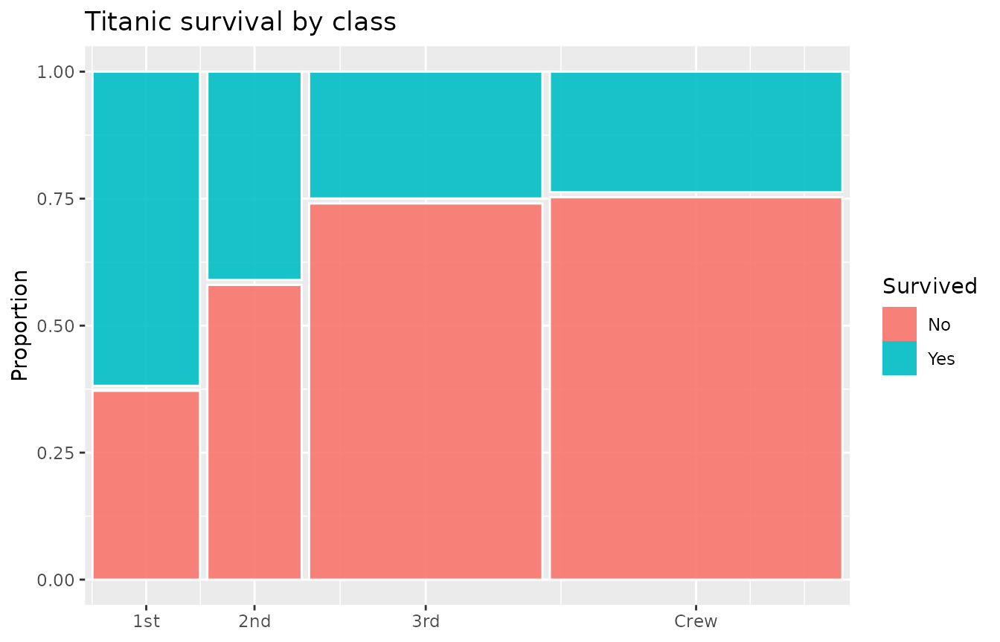
Three components are at work:
-
geom_mekko()computes tile positions from your data. Thexaesthetic defines the columns,filldefines the segments, andweightprovides the counts. -
scale_x_mekko()labels the x-axis with category names at each column’s midpoint. - Standard ggplot2 functions (
labs(),theme(), etc.) work as usual.
Aesthetics
geom_mekko() understands these aesthetics:
| Aesthetic | Required | Description |
|---|---|---|
x |
yes | Categorical variable for columns |
fill |
yes | Categorical variable for segments |
weight |
no | Numeric weight/count (default 1) |
If your data already has one row per observation (no aggregation
needed), omit weight:
ggplot(mtcars) +
geom_mekko(aes(x = factor(cyl), fill = factor(gear))) +
scale_x_mekko() +
labs(x = "Cylinders", fill = "Gears")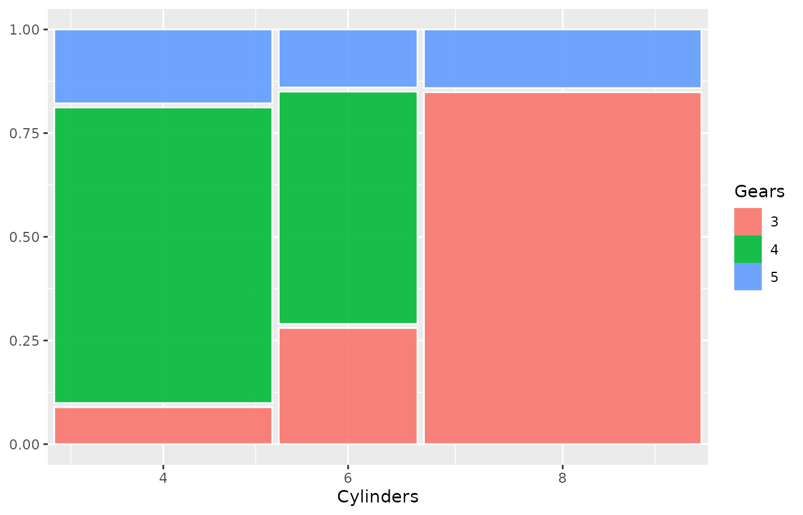
Gap control
The gap parameter controls spacing between tiles as a
fraction of the plot area. Default is 0.01.
ggplot(titanic) +
geom_mekko(aes(x = Class, fill = Survived, weight = Freq),
gap = 0.03
) +
scale_x_mekko() +
labs(title = "Wider gaps (gap = 0.03)")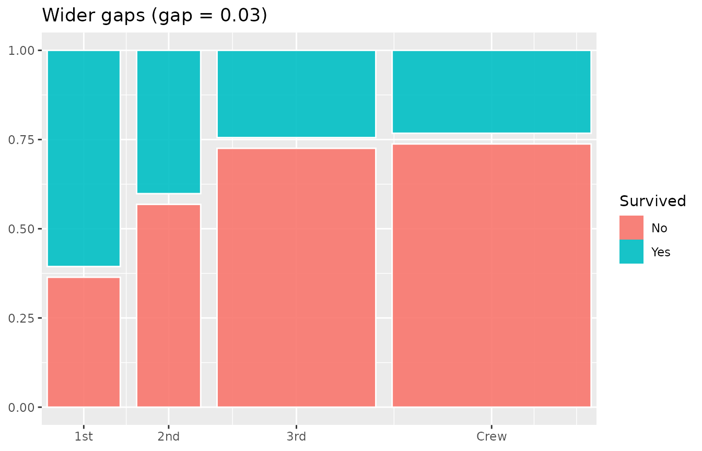
Set gap = 0 for a seamless mosaic:
ggplot(titanic) +
geom_mekko(aes(x = Class, fill = Survived, weight = Freq),
gap = 0
) +
scale_x_mekko() +
labs(title = "No gaps")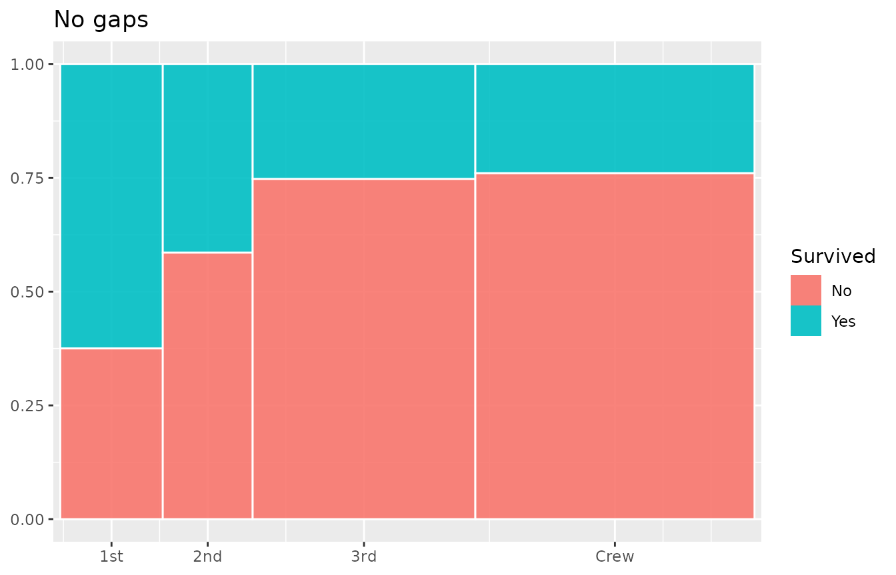
Marginal percentages
scale_x_mekko() can append marginal percentages to the
x-axis labels:
ggplot(titanic) +
geom_mekko(aes(x = Class, fill = Survived, weight = Freq)) +
scale_x_mekko(show_percentages = TRUE) +
labs(y = "Proportion")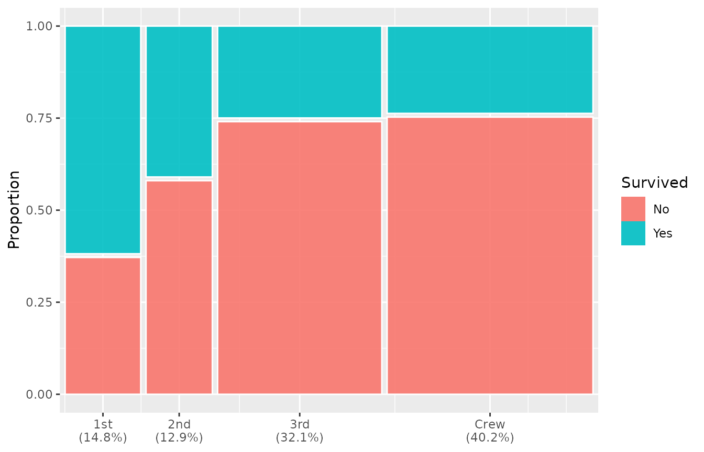
Adding text labels
Use geom_mekko_text() (or
geom_mekko_label() for a boxed version) to place labels at
tile centers. The label aesthetic can reference computed
variables via after_stat():
-
weight– the aggregated count for the tile -
cond_prop– the conditional proportion within the column -
x_label– the x category name -
fill_label– the fill category name
ggplot(titanic) +
geom_mekko(aes(x = Class, fill = Survived, weight = Freq)) +
geom_mekko_text(aes(
x = Class, fill = Survived, weight = Freq,
label = after_stat(weight)
), colour = "white") +
scale_x_mekko() +
labs(title = "Counts inside tiles")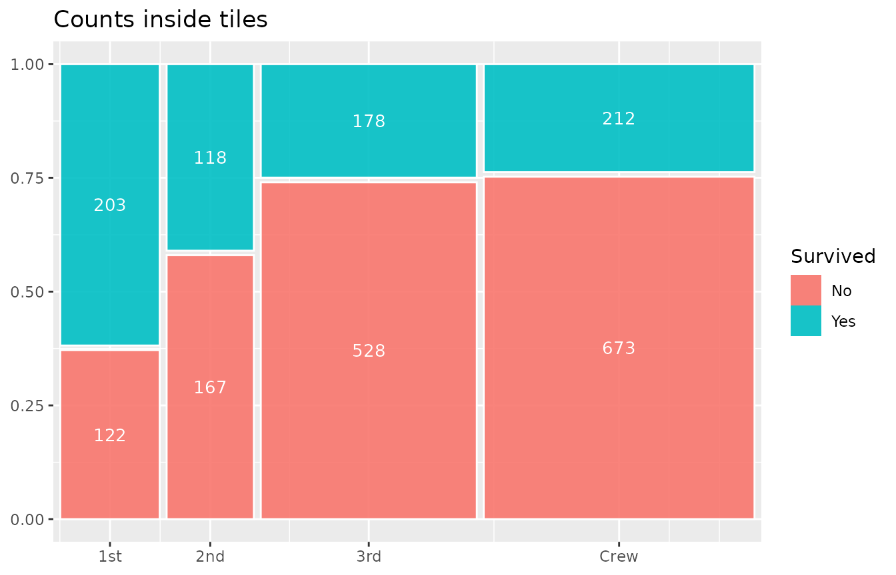
Percentage labels:
ggplot(titanic) +
geom_mekko(aes(x = Class, fill = Survived, weight = Freq)) +
geom_mekko_text(aes(
x = Class, fill = Survived, weight = Freq,
label = after_stat(paste0(round(cond_prop * 100), "%"))
), colour = "white", size = 3) +
scale_x_mekko()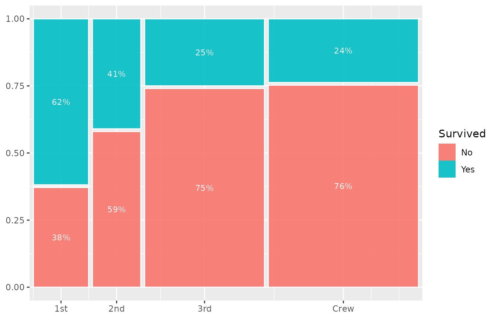
Theming
theme_mekko() provides a clean, minimal theme that
removes distracting x-axis gridlines:
ggplot(titanic) +
geom_mekko(aes(x = Class, fill = Survived, weight = Freq)) +
scale_x_mekko() +
theme_mekko() +
labs(title = "With theme_mekko()")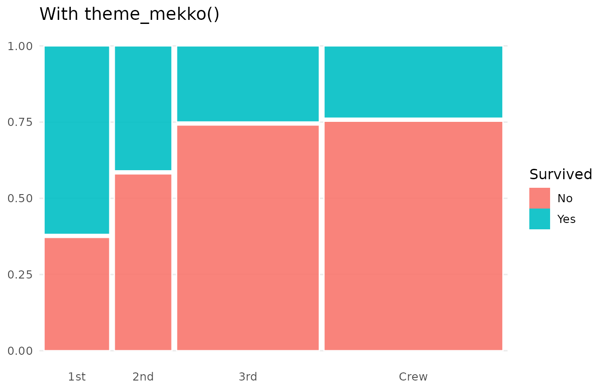
Since it builds on theme_minimal(), you can override any
element:
ggplot(titanic) +
geom_mekko(aes(x = Class, fill = Survived, weight = Freq)) +
scale_x_mekko() +
theme_mekko() +
theme(legend.position = "bottom")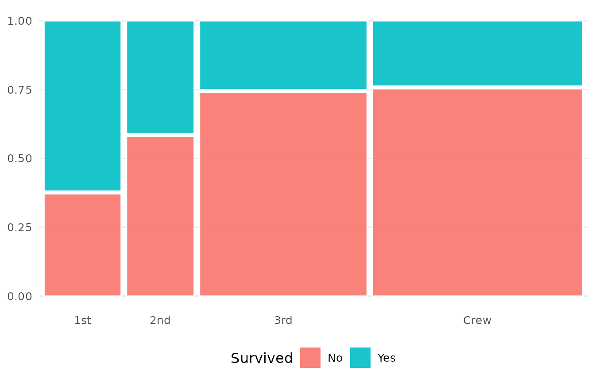
Faceting
geom_mekko() supports ggplot2 faceting. Each panel gets
its own independently proportioned mosaic:
ggplot(as.data.frame(Titanic)) +
geom_mekko(aes(x = Class, fill = Survived, weight = Freq)) +
scale_x_mekko() +
facet_wrap(~Sex) +
labs(title = "Survival by class, faceted by sex")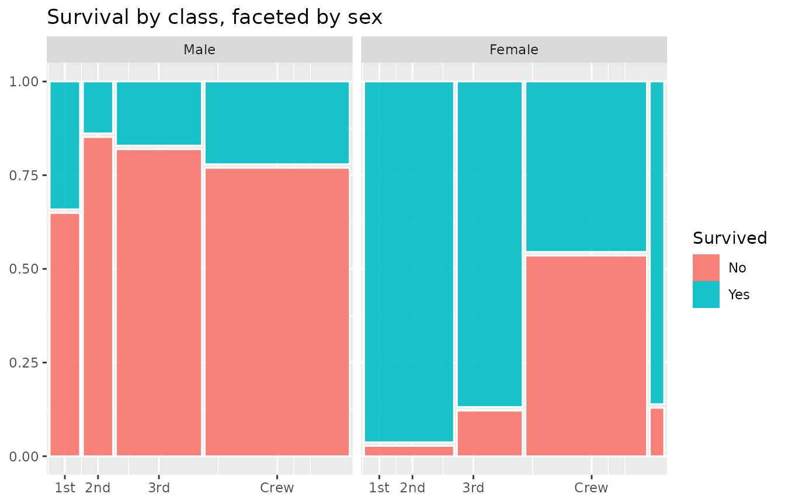
Custom colours
Since fill is a standard ggplot2 aesthetic, any fill
scale works:
haireye <- as.data.frame(HairEyeColor[, , 1])
ggplot(haireye) +
geom_mekko(aes(x = Hair, fill = Eye, weight = Freq)) +
scale_x_mekko() +
scale_fill_brewer(palette = "Set2") +
labs(title = "Hair vs Eye colour (males)")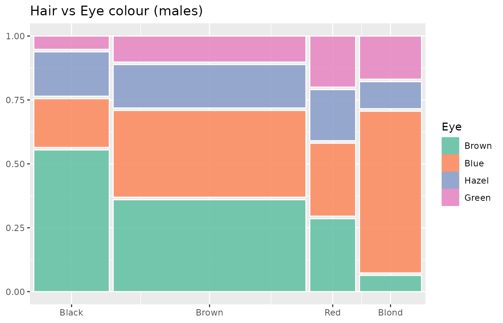
Next steps
See vignette("advanced-features") for spine plots,
Pearson residuals, jittered points, three-variable mosaics, and
programmatic data extraction with fortify_mekko().